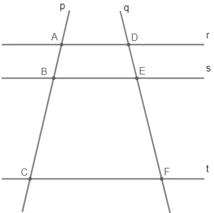

D06
Como resolver o Teorema de Tales
Teorema de Tales afirma que um feixe de retas paralelas determina, em duas transversais quaisquer, segmentos proporcionais. Desse modo, se temos duas retas paralelas “cortadas” por duas transversais, os segmentos formados por essa intersecção são proporcionais.
Representação e fórmula
Para melhor entendermos o enunciado do teorema, representaremos graficamente o feixe de retas paralelas interceptadas por retas transversais.

Observe que as retas r, s e t são paralelas e denotadas por r//s//t, as retas p e q são as transversais, os segmentos AB, BC, DE e EF foram determinados pelas intersecções das retas, e que, pelo teorema de Tales, esses segmentos são proporcionais, ou seja, as razões entre eles são iguais.
Em consequência das propriedades das proporções, podemos escrever o resultado do teorema de Tales destas maneiras:
.webp) Fim
Fim